Целью данной работы является приобретение практических навыков установки операционной системы на виртуальную машину, настройки минимально необходимых для дальнейшей работы сервисов.
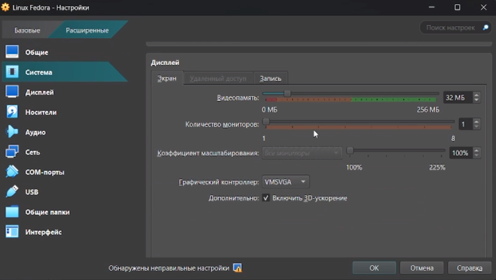
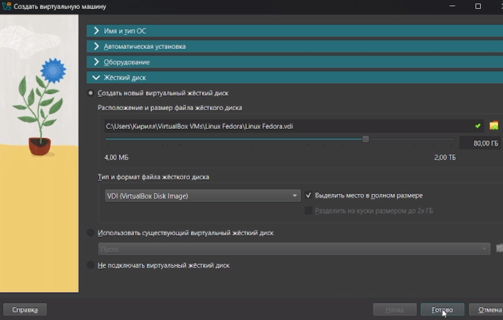
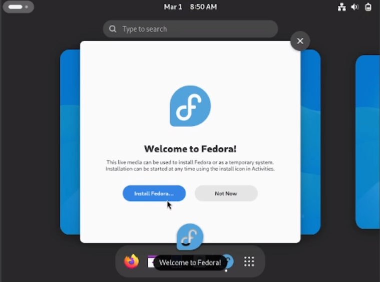 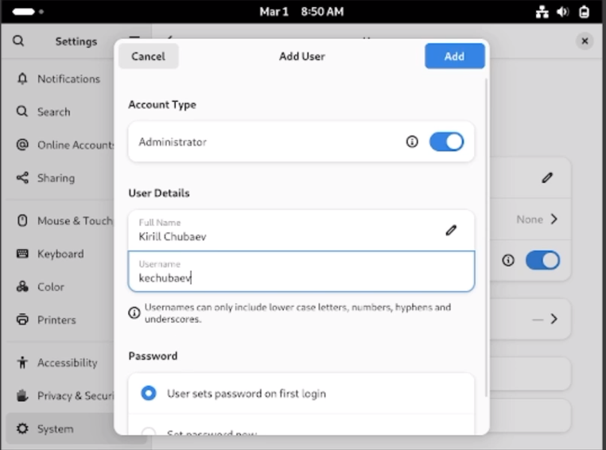 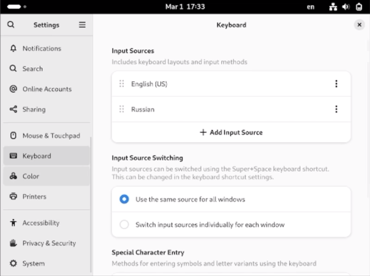 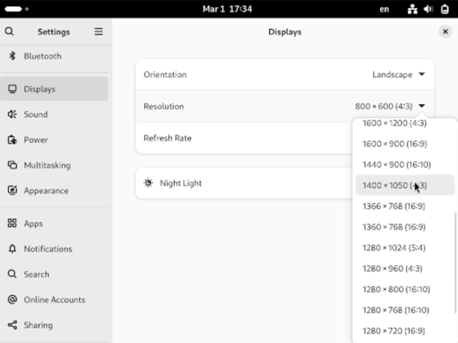
 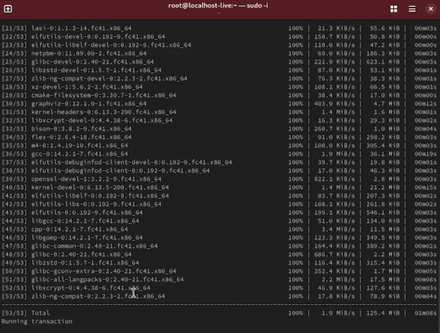
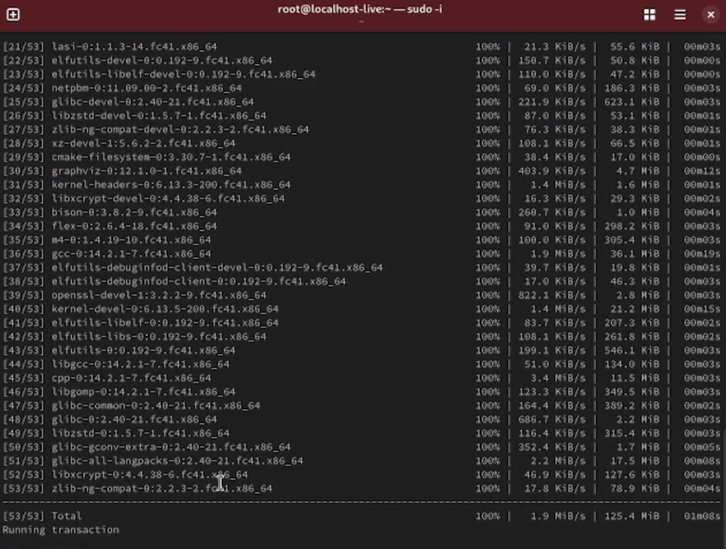
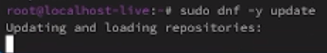
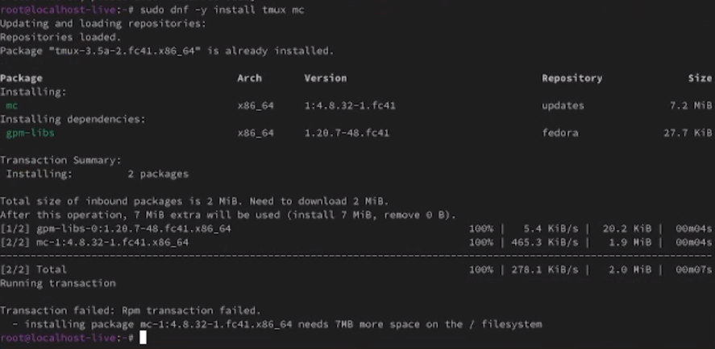
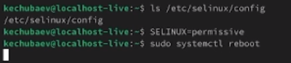
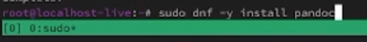  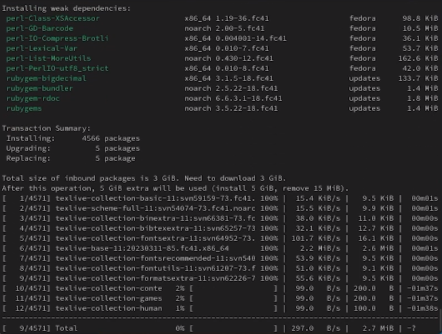
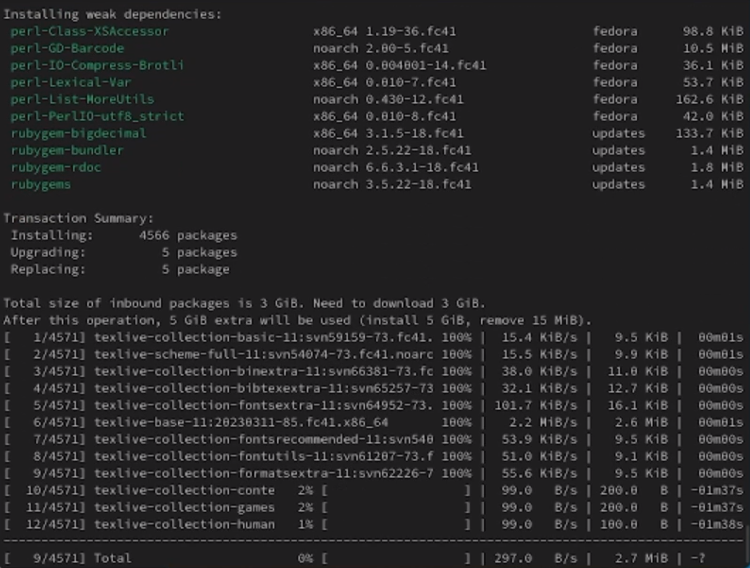
В ходе выполнения данной лабораторной работы я приобрел практические навыки установки операционной системы Linux Fedora на виртуальную машину Virtual, а также настройки минимально необходимых для дальнейшей работы сервисов.
Имя пользователя. Это имя, которое вводит пользователь в ответ на приглашение login.
Идентификатор пользователя (UID). Это положительное целое число,
по которому система отслеживает пользователей.
Идентификатор группы (GID). Группы пользователей применяются для
организации доступа нескольких пользователей к некоторым
ресурсам.
Полное имя. Помимо системного имени в учётной записи содержится и полное имя (имя и фамилия) использующего данную учётную запись человека.
Домашний каталог. У каждого пользователя есть собственный домашний каталог, в котором он может хранить свои данные.
Начальная оболочка. В учётной записи указано, какую из командных
оболочек нужно запустить для данного пользователя. Если специально не
указывать начальную оболочку при создании учётной записи, она будет
назначена по умолчанию.
Вся информация о пользователе обычно хранится в файлах /etc/passwd и
/etc/group.
Примеры файловых систем с краткой характеристикой:
NTFS (New Technology File System). Фирменная файловая система Microsoft, которую разработчики начали внедрять в операционную систему Windows, начиная с версии NT 3.1. Поддерживает большие файлы, разграничение доступа к файлам и другие продвинутые функции.
HFS+ (Hierarchical File System Plus). Популярная файловая система для операционных систем macOS.
Extended Filesystem (Ext3, Ext4). Используется в Linux.
Файловая система определяет предельный размер файлов, которые можно
хранить на носителе, размер самого диска, дополнительные сведения о
каждом файле, доступные для записи, возможность версионирования каждого
файла, способы восстановления файла, если его случайно удалят, скорость
чтения и записи данных на диск
Окончательный список смонтированных файловых систем находится в каталоге /proc/mounts.
Чтобы удалить зависший процесс в Linux, можно использовать следующие методы:
ps aux | grep [имя процесса]
Например, чтобы принудительно закрыть несколько окон браузера Firefox, нужно ввести команду
killall -9 firefox
Курсор мыши превратится в крестик. Навести крестик на окно зависшего приложения и нажать левую кнопку мыши.
Я получил следующую информацию с помощью команды dmesg:
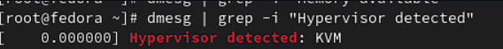 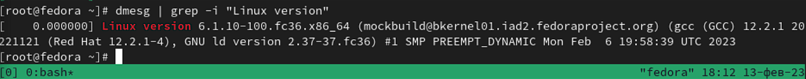 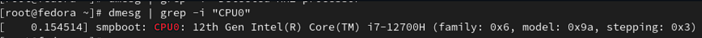
Dash, P. Getting Started with Oracle VM VirtualBox / P. Dash. – Packt Publishing Ltd, 2013. – 86 сс.
Colvin, H. VirtualBox: An Ultimate Guide Book on Virtualization with VirtualBox. VirtualBox / H. Colvin. – CreateSpace Independent Publishing Platform, 2015. – 70 сс.
Vugt, S. van. Red Hat RHCSA/RHCE 7 cert guide : Red Hat Enterprise Linux 7 (EX200 and EX300) : Certification Guide. Red Hat RHCSA/RHCE 7 cert guide / S. van Vugt. – Pearson IT Certification, 2016. – 1008 сс.
Робачевский, А. Операционная система UNIX / А. Робачевский, С. Немнюгин, О. Стесик. – 2-е изд. – Санкт-Петербург : БХВ-Петербург, 2010. – 656 сс.
Немет, Э. Unix и Linux: руководство системного администратора. Unix и Linux / Э. Немет, Г. Снайдер, Т.Р. Хейн, Б. Уэйли. – 4-е изд. – Вильямс, 2014. – 1312 сс.
Колисниченко, Д.Н. Самоучитель системного администратора Linux : Системный администратор / Д.Н. Колисниченко. – Санкт-Петербург : БХВ-Петербург, 2011. – 544 сс.
Robbins, A. Bash Pocket Reference / A. Robbins. – O’Reilly Media, 2016. – 156 сс.7.